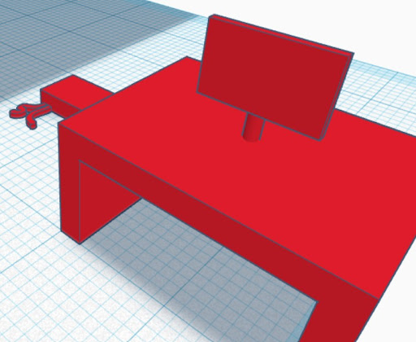
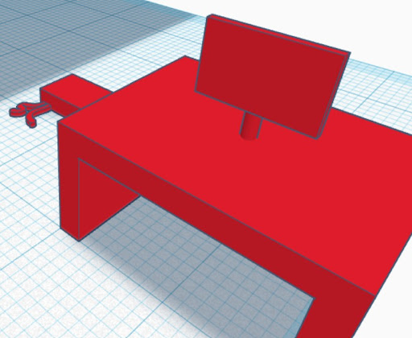
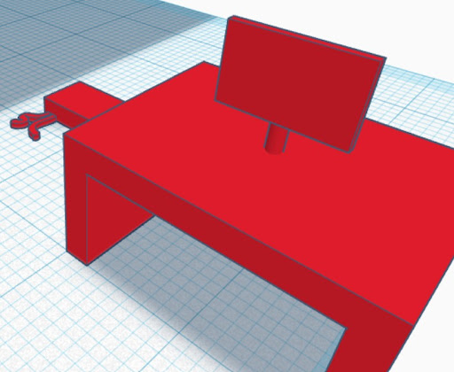

Ugyancsak a Tinkercad segítségével modellezem le az eszközök fizikai elhelyezkedését. Az eszközöket szabadkézzel terveztem meg. 
Ugyancsak a Tinkercad segítségével modellezem le az eszközök fizikai elhelyezkedését. Az eszközöket szabadkézzel terveztem meg. 
A Tinkercad nevű programmal szemléltettem 3D-s kivitelezést. Tervezés közben a legapróbb részletekre is odafigyelve jártam el, hogy nagy méretben is tökéletes lehessen az épület. Itt látható az alapkoncepció, mely 1000-szer kicsinyítéssel látható. Ugyancsak a Tinkercad segítségével modellezem le az eszközök fizikai elhelyezkedését. Az eszközöket szabadkézzel terveztem meg. 